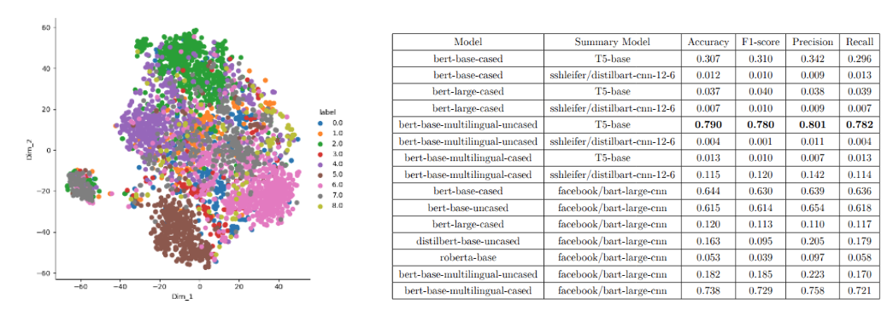

I recently graduated with an M.Sc. in Autonomous Systems from Hochschule Bonn-Rhein-Sieg (H-BRS), Germany. I completed my thesis on affordance-conditioned robot manipulation from egocentric human video, supervised by Prof. Sebastian Houben and Prof. Hermann Blum.
I am currently a Research Assistant at the University of Bonn (RPL), working on leveraging human demonstration data to deploy skills on real robots. I am also building Guido, a mobile assistance robot for hospital patients.
My interests are in robot learning, 3D perception, and getting modern policies to work on real hardware.


A diffusion-based trajectory policy that learns manipulation from egocentric human videos, conditioned on detected functional elements (handles, knobs, buttons). Achieves 63.5% real-world success on drawer/door tasks on the Hello Robot Stretch — a 36 percentage point improvement over the simulation-pretrained baseline.

A mobile robot built to help patients in hospitals — wayfinding, fetching, and a friendly presence. Started in March 2026. ROS 2, with SLAM and Nav2.

Multi-view YOLO + SAM pipeline for lifting 2D functional-element detections into 3D point clouds. Voxel accumulation, DBSCAN clustering, plane segmentation, and SAM2 tracking, with iterative mAP optimisation across several lifting strategies.

Integrated the EVA-02 Vision Transformer backbone into an OCT retinal layer segmentation pipeline, replacing the default CNN encoder to improve representation learning on sparse medical-imaging data.

Customer complaints were recorded in an unstructured, free-text format with no standardized fields. Using historical records and resolution notes logged by site engineers, we explored using LLMs to interpret these informal complaints and predict relevant spare parts or likely issues, with the aim of enabling faster diagnosis and resolution.

Performed this research under the stream "Learning for Multilingual Knowledge Transfer". The goal was to leverage the availability of a higher amount of data in high-resource languages to train and improve over lower-resource languages.

Inverse-kinematics controller computing wheel torques from a desired platform force. Direct EtherCAT communication via SOEM, with BLAS/LAPACK for the numerical solve, in C.

Knowledge-distillation model trained on OpenFace visual features across therapy sessions to estimate child engagement during robot-assisted autism therapy. Small-data, high-stakes, per-subject generalisation.
Hochschule Bonn-Rhein-Sieg, Germany
Presidency University, Bangalore, India